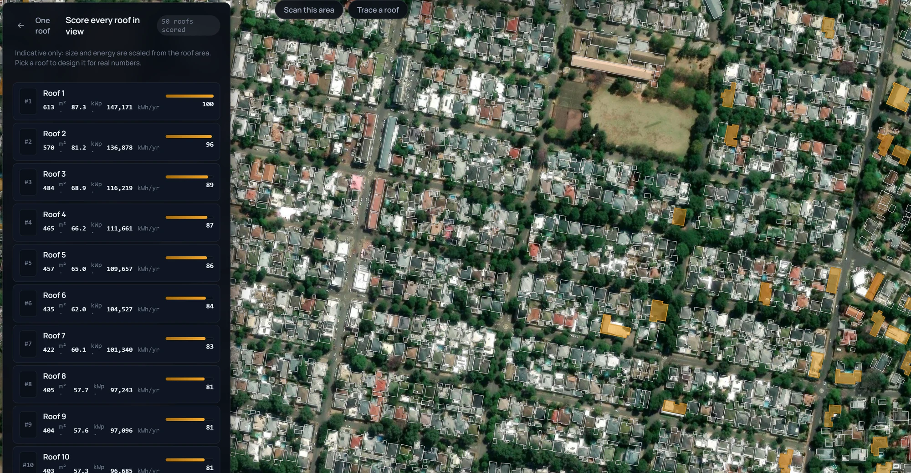
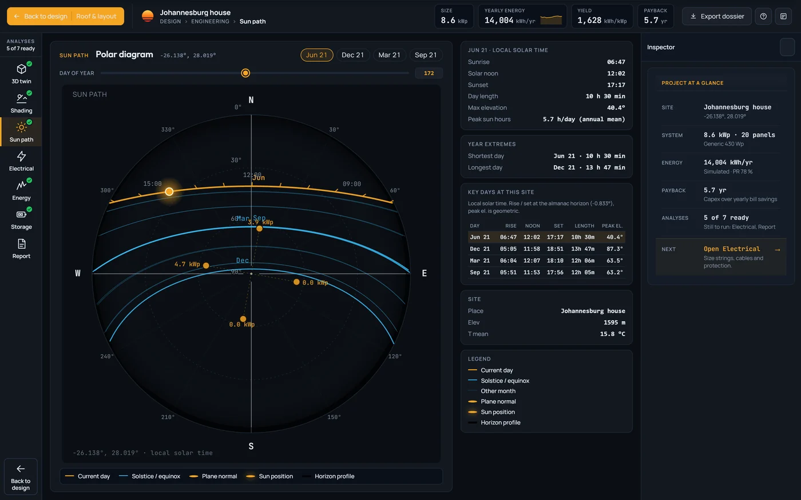
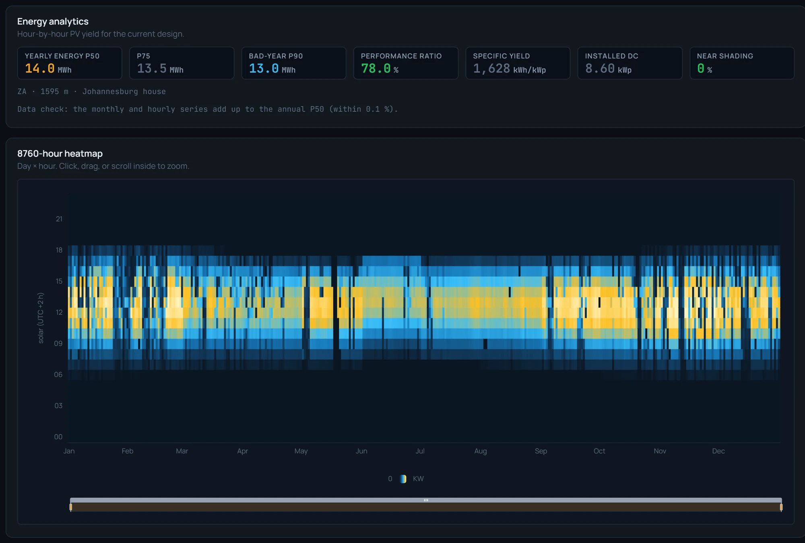
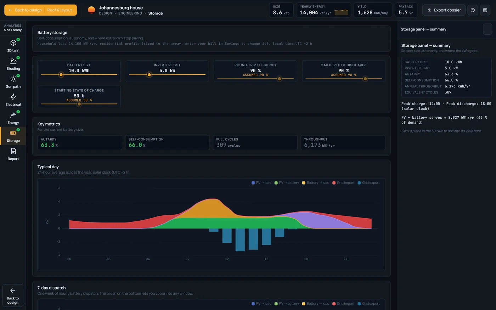
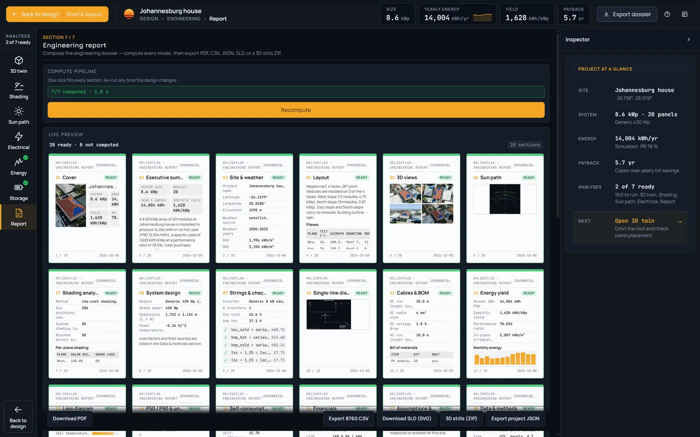
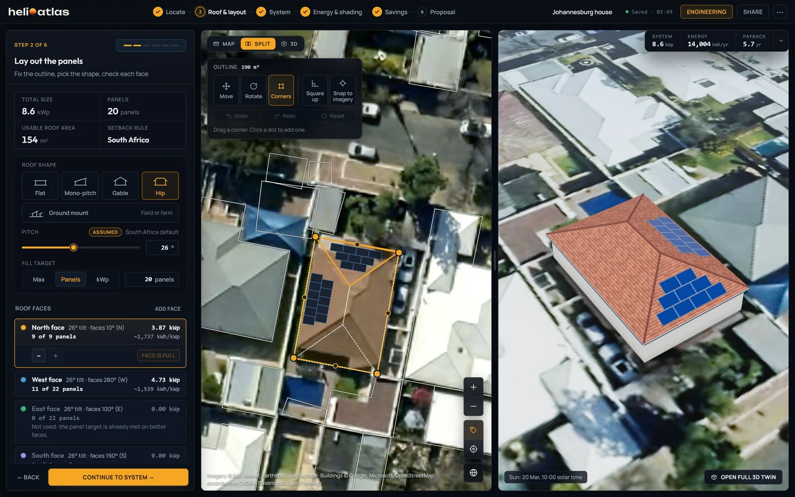

Saved 1.2 s after your last edit.
The header reads Saved, Saving, Saved on this device or Save failed. Offline, the design keeps to this device and the three examples still open.
Find the roof, lay out every face in 3-D, check it in an engineering workbench, model every hour of the year and send a proposal your customer signs online.

Search an address, click a building or scan the street you are looking at. Outlines come from a global building-footprint layer.
From street zoom every outline lights up as you hover. An address within 18 m picks its building, and split outlines merge into one roof.
An imagery assist proposes the roof edge when it is at least 65 % sure, and shows the score. Otherwise draw it by hand, then square it up or snap it to the picture.
Area scan scores the largest outlines in view by roof size, kWp and yearly energy, ranks the top 50 and opens a design on the one you click.
Pick the shape and the studio fills the roof inside the setbacks and around the obstacles you draw, best-facing face first, then builds it in 3-D as you go.
Flat, mono-pitch, gable, hip or ground mount; the pitch reads Assumed until you set it. Ground mounts take fixed tables or a single-axis tracker to 90°, seven ground surfaces and a bifacial rear side.
The faces list runs best first. At the default 26°, North carries 9 of 9 panels at about 1,737 kWh/kWp and West 11 of 22 at about 1,539. A face left empty says why.
Map, Split or 3-D. The stage builds the real roof kind, panels and rack rows on satellite ground and redraws on every edit.
8.6 kWp needs 6.1 kW or more to keep DC:AC at or under 1.4. Auto takes 1 × 8 kW single-phase: DC:AC 1.07. Johannesburg house, example.
301 kWp needs 215 kW or more. No single unit is enough, so Auto takes 3 × 100 kW three-phase: DC:AC 1.00. Cikarang warehouse, example.
Good, Better and Best set the module, the DC:AC ratio and the battery in one click. Change any part and the preset reads Custom.
Eight modules from 410 to 660 Wp, three mono and five bifacial, each tagged not a datasheet. Change the model and every face refills.
Auto takes the smallest unit that keeps DC:AC at or under 1.4 and adds units when one is not enough. Faces more than 10° apart never share an MPPT input.
None, 5, 10 or 20 kWh, or your own size. After the energy run each size shows the share of your use it covers.
Open it from any step. Every analysis reads the design you drew, and Shading writes its loss back to the energy model in one click.




Every face runs through all 8,760 hours of a typical year built from the site's own weather record. The answer is a range: P50, P75, P90 and P99.
The live card reads Estimate on every step until the hourly run finishes, then Simulated. Change the design and older numbers are flagged stale, with the cause named.
Sun position, sky model, far horizon, incidence, temperature, low light, inverter part-load and clipping, face by face. PR follows the IEC definition, and every hour exports as a CSV.
Each one opens to its weather record and years, the engine version, the loss sources and the uncertainty terms.
Pick a tariff preset or set your own rate, fixed fee, export credit and export mode, then enter a monthly bill or yearly kWh. The studio runs the bill with and without the system and prices it over 25 years. Add a loan for the monthly payment.
Add your name, colour and logo, check six A4 pages in a live preview, then send the link.
A cover with a 3-D render of the roof, the system with P50 and P90 per face, savings, investment, equipment and assumptions, next steps and acceptance. Five pages without the investment page.
Every proposal states that it is a design estimate, not a quotation, and prints a valid-until date.
The link opens your header, the yearly saving, size, output, payback and self-use, the bill before and after, and the finance card. The customer signs with name, email and a tick.
The header reads Saved, Saving, Saved on this device or Save failed. Offline, the design keeps to this device and the three examples still open.
Search, rename, duplicate or delete. Each project carries its stage, Lead, Designed, Proposed or Signed, and Mark as sent moves it to Proposed.
Limits, stated once. Area scan ranks by roof size: one estimate on the largest roof, scaled by area, and the panel says Indicative only. Setbacks apply the largest edge value on every edge, and the US pathway is not drawn. Shading leaves out trees, neighbours and diffuse blocking. Cable runs are assumed at 30 m DC and 10 m AC, and the design-low temperature is an estimate you can override. Storage efficiency, depth and starting charge are fixed. The full list is on Science, Limits
Request access for your team, or book a demo and watch one design go from map to signature.
